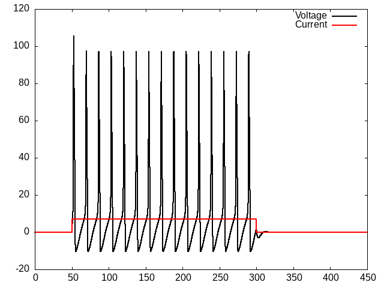

Hodgkin and Huxley Model of the Action Potential
1. Hodgkin Huxley Model (HHM) of the Neuron
2. Background
Hodgkin and Huxley, the people as well as their model, provide a nice example for how to structure one's education to do this sort of work, as well as providing an exemplary example of doing the work.
One of the lessons is that you need to train broadly. You may not understand in the beginning what the problem is. You will need to be prepared for it to appear, and when it does to be able to attack it. For Hodgkin and Huxley this meant training in both the physical and non-physical sciences. Each emphasized a different side of that divide, but both made sure they could converse across the divide. If you want to apply computational tools to social science problems then you will need to make sure your course work and your practical skills bridge that divide too.
2.1. Biographical Sources
The Nobel Prize organization keeps biographies of all recipients (Hodgkin, Huxley).
This article (pdf) is a nice summary of the work. You might look for how long it took Huxley to calculate his simulation of one action potential numerically using the method, basically, that we will be using, and compare it to how long it takes you.
2.2. Model Description (detailed)
Gersnter's book's chapter on the HHM goes into more detail than I do. If you have problems getting things to work, or just want a more detailed mathematical explanation this is an excellent resource.
3. The HHM
3.1. Some introductory reminders and admonitions
The current going in to the cell is what we inject. The current coming out is the sum of the capacitance (due to the lipid bilayer), and the resistance (due to the ion channels). This is Kirchoff's rule.
Recall that in the Integrate and Fire model we lumped all our ionic events together into one term:
\[\tau \frac{dV(t)}{dt} = -V(t) + R~I(t)\]
The HHM is basically the same except we have a resistance for each ion channel (ask yourself,before reading the next paragraph) what those ions are or at least how many terms you will need). The rule for currents in parallel is to apply Kirchoff's and Ohm's laws realizing that they all experience the same voltage, thus the currents sum.
But in the HHM we treat these different ionic components with their own terms to capture the difference between the Sodium (Na), Potassium (K), and negative anions (still lumped as "leak" l).
\[\sum_i I_R(t) = \bar{g}_{Na} m^3 h (V(t) - E_{Na}) + \bar{g}_{K} n^4 (V(t) - E_{K}) + \bar{g}_{L} (V(t) - E_{L})\]
3.2. Putting it together The HHM
\[I_{tot} = I_r + I_C\]
By the same logic as for the integrate and fire \(I_C = c~\frac{dV}{dt}\).
\[I_{tot} = \bar{g}_{Na} m^3 h (V(t) - E_{Na}) + \bar{g}_{K} n^4 (V(t) - E_{K}) + \bar{g}_{L} (V(t) - E_{L}) + c~\frac{dV}{dt}\]
Rearrange to get the \(\frac{dV}{dt}\) on a side by itself.
\begin{equation} \label{eq:HHM} c~\frac{dV}{dt} = I_{tot} - (\bar{g}_{Na} m^3 h (V(t) - E_{Na}) + \bar{g}_{K} n^4 (V(t) - E_{K}) + \bar{g}_{L} (V(t) - E_{L})) \end{equation}3.2.1. Test your understanding
You cannot program what you don't understand. Sometimes people think that the act of programming will bring them understanding. It doesn't. It may provoke understanding. It may be that you did not realize that you did not understand something until you try to code it. That can be helpful. But if you are fuzzy on the basics coding will not grant you insight. Simulating models with code is most useful for helping you see the consequences of something. If you understand the above model, what its components stand for and represent, then you might wonder what would happen if …? What would happen if there were five n channel components? And so on. It is not that you do not understand what n represents, but that you are unable to do the math in your head. That is where the computer helps: making concrete the consequences of your well understood system.
So, in that light, and before you start coding, ask yourself,
- What are the \(\bar{g}_*\) terms?
- What are the \(E_{*}\) terms?
- What do m,n, and h represent?
- Where did these equations come from?
3.3. It's Differential Equations All the Way Down
Although the HHM uses just the same mathematics as the I&F model, and we will use the same Euler's method to step forward and calculate model terms that evolve over time, this model is more complex in two ways. First, it has multiple derivatives and derivatives at multiple levels. Each of the m, n, and h terms are also changing and regulated by a differential equation. They are dependent on voltage. For example, \(\dot{m} = \alpha_m (V)(1 - m) - \beta_m (V) m\) 1.
3.3.1. More food for thought
- Each of the m,n, and h terms have their own equation of exactly the same form, but with their unique alphas and betas (that is what the subscript means).
- What does the V in parentheses mean?
- When they were finally sequenced (decades later), what do you think was the number of sub-units that the sodium and potassium channels were found to have?
3.4. Online Practice
If possible it can be good to play with the data you wish to model before you get to writing equations or writing code. Since the HHM has been around for awhile you can find versions of the code that you can play with to gain familiarity about the general behavior and the important variables. That can help you in the debugging process. You may see that your code is mis-behaving in a way you understand from your manipulating of others' models. And thus you can better figure out where your code needs tweaking. Of course there will not always be that opportunity, but when it is available use it.
Here our goal is to learn to understand a model, and to learn how to write code to implement it, so there is no harm in looking at others' code as long as you don't just slavishly copy it.
3.4.1. An online version of the HHM coded in javascript 2
3.5. Getting Started
3.5.1. How do you know where to start? Motivating Questions?
- If you allow \(t \rightarrow \infty \mbox{, then } \frac{dV}{dt}=\)?
- You assume that it goes to zero; that is, you reach steady state. Then you can solve for some of the constants.
- Where do the constants come from?
- They come from experiments, and you use what you are given.
- Assume the following constants - they are set to assume a resting potential of zero (instead of what and why doesn't this matter)?
- These constants also work out to enforce a capacitance of 1
3.5.2. Constants
| Constant | Value |
|---|---|
| ena | 115 |
| gna | 120 |
| ek | -12 |
| gk | 36 |
| el | 10.6 |
| gl | 0.3 |
WARNING These constants are adjusted to make the resting potential 0 and the capacitance 1.0. If you want your model to have a biological resting potential you will need to adjust these values, but when you think about it the scale is rather arbitrary. What does water freeze at 0 or -32? Well it depends on the scale: centigrade or fahrenheit. Same for neurons. Why not use a scale that makes the math simpler. Focus on the relative behavior not some absolute, and rather arbitrary, numbers?
3.6. Alpha and Beta Formulas
\(\alpha_{n}(V_{m})={\frac {0.01(10-V_{m})}{\exp {\big (}{\frac{10-V_{m}}{10}}{\big )}-1}}\)
\(\alpha_{m}(V_{m})={\frac {0.1(25-V_{m})}{\exp {\big (}{\frac {25-V_{m}}{10}}{\big )}-1}}\)
\(\alpha _{h}(V_{m})=0.07\exp {\bigg (}{\frac {-V_{m}}{20}}{\bigg )}\)
\(\beta _{n}(V_{m})=0.125\exp {\bigg (}{\frac {-V_{m}}{80}}{\bigg )}\)
\(\beta _{m}(V_{m})=4\exp {\bigg (}{\frac {-V_{m}}{18}}{\bigg )}\)
\(\beta_{h}(V_{m})={\frac {1}{\exp {\big (}{\frac {30-V_{m}}{10}}{\big)}+1}}\)
4. Coding the HHM
Again, I am doing this in common lisp so that you can see actual working code that you can adapt to a different language.
4.1. Imports and Set-up
Every language will have a bit of boiler plate that you need to do to get things set up. You need to specify the tools you are using, and what, if you are writing a library, will be available for your users.
1: (eval-when (:compile-toplevel :load-toplevel :execute) 2: (ql:quickload "eazy-gnuplot" :silent t)) 3: 4: (load #P"/home/britt/gitRepos/compNeuroIntro420/notebooks/DE_Spikes/wk3_iandf/test.lisp") 5: 6: (setq *read-default-float-format* 'double-float) 7: 8: (DEFPACKAGE #:hodgkin-huxley 9: (:nicknames "HH") (:use #:cl) 10: (:import-from "EAZY-GNUPLOT" 11: "WITH-PLOTS" 12: "PLOT" 13: "GP-SETUP") 14: (:import-from "MYTEST" 15: "BETWEEN" 16: "UPDATE")) 17: 18: (in-package :hh)
4.1.1. Explanations (optional)
Unless you are thinking of trying lisp most of this is un-necessary to know, at least the specifics. Generally, there will be other set-up for other languages, but if you want more details
Lines 1 and 2 describe some setup to make the compiling always compile everything, and to make the plotting library I am using available for later in my code.
Line 4 shows that I decided to re-use some lisp functions that I wrote for the I&F model, which I left in a badly named file test.lisp. The #P tells lisp this is a file path and not just a string of characters.
Line 6. Programming languages can have "types". Sometimes those are formal types and other times informal and more or less decided dynamically. Numbers in particular are tricky. 1 (an integer) is usually not the same as 1.0 (a float) or 1.0 (a double). You may need to specify what your programming language should consider the default number type so you can type 1.0 and know what your computer program compiler (or interpreter) will infer is the type of your number.
Lines 8 - 16 are me defining my package. I say what its name will be and a shorter version I can type as a nickname. I say what functions I want from the packages I am importing to be available for use in this new package.
Lastly on line 18 I say that I am now working in the namespace of my new package.
4.2. Classes and Objects
Many programming languages (but not all) will have a notion of an object. Your intuition can be of a car. A car has attributes (blue, sedan) that are its color and style. Then it has methods, things it can do, (go forward, invoke four wheel drive). Python is an object based language and object oriented programming is common in Python. An object encapsulates the methods and attributes together. Many programming languages refer to types of objects as classes. Then when you want a particular car you would create an instance of the car class. To make that particular car run you would invoke the go-forward method of your car. You could also "paint" it by changing the attribute of mycar.color = "red".
Classes are a bit different in lisp. The methods are not part of the class definition. Here I specify what all I want as attributes of my neuron for simulation and then a method for using it.
19: (defclass neuron-sim () 20: ((dt 21: :initarg :dt 22: :initform 0.01) 23: (max-t 24: :initarg :max-t 25: :initform 300) 26: (init-t 27: :initarg :init-t 28: :initform 0.0) 29: (start-time 30: :initarg :start-time 31: :initform 10.0) 32: (stop-time 33: :initarg :stop-time 34: :initform 150.0) 35: (cap 36: :initarg :cap 37: :initform 1.0) 38: (res 39: :initarg :res 40: :initform 2.0) 41: (threshold 42: :initarg :threshold 43: :initform 3.0) 44: (spike-display 45: :initarg :spike-display 46: :initform 8.0) 47: (init-v 48: :initarg :init-v 49: :initform 0.0) 50: (injection-current 51: :initarg :injection-current 52: :initform 50.0) 53: (voltage) 54: (injection-time) 55: (tau))) 56: 57: (defmethod initialize-instance :after ((neuron neuron-sim) &key) 58: (let ((init-v (slot-value neuron 'init-v)) 59: (start-time (slot-value neuron 'start-time)) 60: (stop-time (slot-value neuron 'stop-time)) 61: (res (slot-value neuron 'res)) 62: (cap (slot-value neuron 'cap))) 63: (setf (slot-value neuron 'voltage) init-v) 64: (setf (slot-value neuron 'injection-time) (cons start-time stop-time)) 65: (setf (slot-value neuron 'tau) (* res cap)))) 66:
I won't go into details here. Ask me if you have questions. The important general point is that I am setting up all the constants and parameters that I think I will need for a general neuron that I might use in a simulation as defaults for when I create it. I can of course change them (like I did for car color), but this gives me one location where I can establish defaults.
One nice use of classes is inheritance. I can create a general object type that I then make more specific for a more specific use case. Here we don't just want a general neuron. We want one for our HHM. Such a neuron can inherit most of what it needs from the general neuron class, but we will then give it some additional attributes. That is what happens in the next source block.
67: (defclass neuron-hh (neuron-sim) 68: ((ena 69: :initarg :ena 70: :type real 71: :initform 115.0 72: :accessor ena 73: :documentation "Reversal Potential for Sodium") 74: (gna 75: :initarg :gna 76: :type real 77: :initform 120.0 78: :accessor gna 79: :documentation "Sodium Conductance") 80: (ek 81: :initarg :ek 82: :type real 83: :initform -12.0 84: :accessor ek 85: :documentation "Reversal Potential for Potassium") 86: (gk 87: :initarg :gk 88: :type real 89: :initform 36.0 90: :accessor gk 91: :documentation "Potassium Conductance") 92: (el 93: :initarg :el 94: :type real 95: :initform 10.6 96: :accessor el 97: :documentation "Reveral Leak Potential" 98: ) 99: (gl 100: :initarg :gl 101: :initform 0.30 102: :type real 103: :accessor gl 104: :documentation "Leak Conductance")))
4.3. Helper Functions Alpha and Beta
There are a lot of different functions to keep track of. One way to start is by being very explicit. That is what I do here. If you look though you will see that all of these are variations of a basic formulation. Another approach would be to write one generic function that takes in values and generates a new function with the specific parameter values set. Then you would create each of the alpha and beta functions from that generic function. This is sometimes called a closure. However, there are some slight variations of the forms here and only six functions so I found it easier to write each one explicitly.
105: (defun alpha-n (volt) 106: (/ (- 0.1 (* 0.01 volt)) (- (exp (- 1 (* 0.1 volt))) 1.0))) 107: 108: (defun alpha-m (volt) 109: (/ (- 2.5 (* 0.1 volt)) (- (exp (- 2.5 (* 0.1 volt))) 1.0))) 110: 111: (defun alpha-h (volt) 112: (* 0.07 (exp (/ (* -1.0 volt) 20.0)))) 113: 114: (defun beta-n (volt) 115: (* 0.125 (exp (/ (* -1.0 volt) 80.0)))) 116: 117: (defun beta-m (volt) 118: (* 4.0 (exp (/ (* -1.0 volt) 18.0)))) 119: 120: (defun beta-h (volt) 121: (/ 1.0 (+ (exp (- 3.0 (* 0.1 volt))) 1.0)))
122: (defun m-dot (volt m) 123: (- (* (alpha-m volt) (- 1 m)) (* (beta-m volt) m))) 124: 125: (defun n-dot (volt n) 126: (- (* (alpha-n volt) (- 1 n)) (* (beta-n volt) n))) 127: 128: (defun h-dot (volt h) 129: (- (* (alpha-h volt) (- 1 h)) (* (beta-h volt) h))) 130: 131: (defun m-infinity (volt) 132: (/ (alpha-m volt) (+ (alpha-m volt) (beta-m volt)))) 133: 134: (defun n-infinity (volt) 135: (/ (alpha-n volt) (+ (alpha-n volt) (beta-n volt)))) 136: 137: (defun h-infinity (volt) 138: (/ (alpha-h volt) (+ (alpha-h volt) (beta-h volt))))
4.4. Updating the Voltage
Look back at the \(\frac{dv}{dt}\) formula for the I&F model and try to see the similarities. Although this function looks more complex it is still the basic Euler Method we used from the I&F model. In fact, if you look where the update function comes from you will see it is literally the one from the I&F model. I imported it.
A reason for the complexity is also that there are just a lot more parameters to set and a more complicated formula for the derivative. Some of this comes from using the lisp object system (that is why I have to speak of "slots"). The updating formula is also more complex, because I need to update several different derivatives all in a particular order.
139: 140: (defun dvdt (voltage-now curr-in hh-m hh-n hh-h neuron-parameters) 141: (with-slots (ena gna ek gk el gl) neuron-parameters 142: (- curr-in (+ (* gna (expt hh-m 3.0) hh-h (- voltage-now ena)) 143: (* gk (expt hh-n 4.0) (- voltage-now ek)) 144: (* gl (- voltage-now el)))))) 145: 146: 147: (defun run-hh-sim (nps) 148: (with-slots 149: (dt max-t init-v injection-current injection-time) nps 150: (do* 151: ((ts) 152: (vs) 153: (currs) 154: (ms) 155: (ns) 156: (hs) 157: (sim-time 0.0 (+ sim-time dt)) 158: (inj-cur 0.0 159: (between sim-time 160: :lower (car injection-time) 161: :upper (cdr injection-time) 162: :if-true injection-current)) 163: (hh-m-sim (m-infinity init-v) (update hh-m-sim (m-dot voltage hh-m-sim) dt )) 164: (hh-n-sim (n-infinity init-v) (update hh-n-sim (n-dot voltage hh-n-sim) dt )) 165: (hh-h-sim (h-infinity init-v) (update hh-h-sim (h-dot voltage hh-h-sim) dt )) 166: (voltage init-v 167: (update voltage 168: (dvdt voltage inj-cur hh-m-sim hh-n-sim hh-h-sim nps) dt))) 169: ((> sim-time max-t) (list (nreverse ts) (nreverse currs) (nreverse vs) 170: (nreverse ms) (nreverse ns) (nreverse hs))) 171: (push sim-time ts) 172: (push voltage vs) 173: (push inj-cur currs) 174: (push hh-m-sim ms) 175: (push hh-n-sim ns) 176: (push hh-h-sim hs) 177: )))
4.5. Plotting, again
The same logic applies. The easiest way to tell whether we got it right or wrong is to write a function that will let us visualize our long, very long, list of numbers.
178: (defun handh-plot (output plot-data) 179: (with-plots (*standard-output* :debug nil) 180: (gp-setup :output output :terminal :png 181: :key '()) 182: (plot 183: (lambda () 184: (loop for times in (first plot-data) 185: for volts in (third plot-data) 186: do (format t "~&~a ~a" times volts))) 187: :with '(:lines :title "Voltage" :lc "black" :lw 2)) 188: (plot 189: (lambda () 190: (loop for times in (first plot-data) 191: for currs in (second plot-data) 192: do (format t "~&~a ~a" times currs))) 193: :with '(:lines :lw 2 :lc "red" :title "Current")) 194: output))
4.6. And finally,
195: (defvar sim-dat (run-hh-sim (make-instance 'neuron-hh :dt 0.02 :max-t 450.0d0 196: :start-time 50.0d0 :stop-time 300.0d0 197: :injection-current 7.0d0))) 198: (handh-plot "handh.png" sim-dat)

Figure 1: Hodgkin-Huxley Spiking to Constant Current Input
Footnotes:
Do you remember what the "dot" rotation is meant to represent? Do you regard its use here as correct?
Javascript is a common programming language for the web. It has a reputation of being ugly, and a bit of a hack, but there is a lot of software written in this language and it is certainly a language that one can get a job writing. The library has a nice book availble for on-line reading that teaches this language. You can also use your browser as an IDE for javascript. Look for the "developer tools" or similar in your browser. On Firefox if you click the button to show all the options and preferences (the three lines that suggests "menu") you will see a button for "more tools". From there you can look at the web developer tools. You will be able to see the raw code for your web page and the javascript functions that are running. You can also enter your own code into the "console" tab and run it. Try typing alert("hi") in the console and clicking run. Amazing, no?